CODING AGENTS AS PIXEL WORLD MODELS
traex/DeepSeek-V4.1-Flash · common50_0032
点击播放 · 原生 RGB 像素
逐轮保存的候选
回放视频、检查图与代码变化。
每份候选均可单独播放。实际图片检查记录在下方工具轨迹中。
候选 01播放与检查图
点击播放 · 原生 RGB 像素
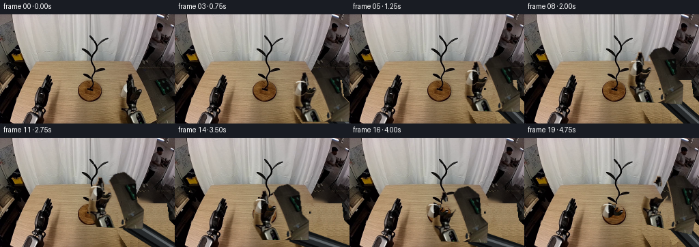
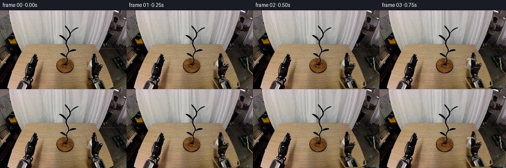
展开代码变化
--- 上一保存版本
+++ 本次保存版本
@@ -0,0 +1,307 @@
+"""Generate the 20-frame mug-transfer sequence from the supplied first frame."""
+
+from pathlib import Path
+
+import cv2
+import numpy as np
+from PIL import Image
+
+import artifact_io
+
+
+CASE_DIR = Path(__file__).resolve().parent
+WIDTH, HEIGHT = 256, 160
+N_FRAMES = 20
+
+
+def smoothstep(value):
+ value = float(np.clip(value, 0.0, 1.0))
+ return value * value * (3.0 - 2.0 * value)
+
+
+def piecewise_position(frame):
+ """Cup-center path: grasp, lift, carry over the branches, then set down."""
+ keys = [
+ (0, (184.5, 109.5)),
+ (3, (183.8, 107.0)),
+ (6, (177.0, 86.0)),
+ (9, (158.0, 74.5)),
+ (12, (134.0, 82.0)),
+ (15, (122.0, 105.5)),
+ ]
+ for (f0, p0), (f1, p1) in zip(keys[:-1], keys[1:]):
+ if frame <= f1:
+ alpha = smoothstep((frame - f0) / max(1, f1 - f0))
+ return tuple((1.0 - alpha) * a + alpha * b for a, b in zip(p0, p1))
+ return keys[-1][1]
+
+
+def cup_angle(frame):
+ if frame <= 3:
+ return 0.0
+ if frame <= 9:
+ return 3.5 * smoothstep((frame - 3) / 6.0)
+ if frame <= 15:
+ return 3.5 * (1.0 - smoothstep((frame - 9) / 6.0))
+ return 0.0
+
+
+def cup_mask():
+ """A rigid, anti-aliased cup plus handle mask in source coordinates."""
+ yy, xx = np.mgrid[:HEIGHT, :WIDTH]
+ body = ((xx - 184.3) / 10.2) ** 2 + ((yy - 109.5) / 11.1) ** 2 <= 1.0
+ # The handle is an open elliptical ring attached at the right of the body.
+ handle_outer = ((xx - 198.0) / 8.8) ** 2 + ((yy - 109.2) / 8.4) ** 2 <= 1.0
+ handle_inner = ((xx - 198.0) / 4.2) ** 2 + ((yy - 109.2) / 3.8) ** 2 <= 1.0
+ handle = handle_outer & ~handle_inner & (xx >= 191.0)
+ mask = ((body | handle) & (xx >= 172) & (xx <= 208) & (yy >= 96) & (yy <= 122))
+ mask = mask.astype(np.float32)
+ mask = cv2.GaussianBlur(mask, (3, 3), 0.55)
+ return np.clip(mask * 1.35, 0.0, 1.0)
+
+
+def gripper_mask(image, cup_alpha):
+ """Segment the original right end effector by dark, low-saturation pixels."""
+ hsv = cv2.cvtColor(image, cv2.COLOR_RGB2HSV)
+ value = hsv[:, :, 2].astype(np.float32)
+ saturation = hsv[:, :, 1].astype(np.float32)
+ yy, xx = np.mgrid[:HEIGHT, :WIDTH]
+ roi = (xx >= 169) & (yy >= 79)
+
+ dark = (value < 121) & roi
+ neutral_dark = (value < 169) & (saturation < 68) & roi
+ seed = (dark | neutral_dark).astype(np.uint8)
+ seed[cup_alpha > 0.08] = 0
+
+ count, labels, stats, _ = cv2.connectedComponentsWithStats(seed, 8)
+ selected = np.zeros_like(seed)
+ for index in range(1, count):
+ x, y, width, height, area = stats[index]
+ touches_camera_edge = x + width >= 254 or y + height >= 158
+ sizeable = area >= 38
+ rightward = x >= 205 and area >= 8
+ if touches_camera_edge or sizeable or rightward:
+ selected[labels == index] = 1
+
+ # Preserve the thin left finger tips and wrist even where specular pixels
+ # briefly leave the dark-pixel component.
+ polygon = np.array(
+ [[176, 84], [188, 84], [195, 97], [203, 94], [211, 83],
+ [224, 79], [240, 91], [244, 122], [256, 133], [256, 160],
+ [190, 160], [169, 126], [171, 102]],
+ dtype=np.int32,
+ )
+ allowed = np.zeros((HEIGHT, WIDTH), np.uint8)
+ cv2.fillPoly(allowed, [polygon], 1)
+ selected = (selected & allowed).astype(np.uint8)
+ selected = cv2.morphologyEx(selected, cv2.MORPH_CLOSE, np.ones((3, 3), np.uint8))
+ selected = cv2.dilate(selected, np.ones((3, 3), np.uint8), iterations=1)
+ selected[cup_alpha > 0.08] = 0
+
+ alpha = cv2.GaussianBlur(selected.astype(np.float32), (3, 3), 0.55)
+ return np.clip(alpha * 1.2, 0.0, 1.0)
+
+
+def make_background(image, occluder_alpha):
+ """Inpaint the movers, then restore the table's horizontal wood texture."""
+ hard_mask = (occluder_alpha > 0.08).astype(np.uint8) * 255
+ hard_mask = cv2.dilate(hard_mask, np.ones((3, 3), np.uint8), iterations=1)
+ plate = cv2.inpaint(image, hard_mask, 7, cv2.INPAINT_TELEA)
+
+ # Large inpainted regions on the table otherwise become unnaturally flat.
+ # Rebuild those rows from a nearby clean strip and a deterministic grain.
+ rng = np.random.default_rng(32032)
+ noise = rng.normal(0.0, 1.45, (HEIGHT, WIDTH, 1))
+ for y in range(96, HEIGHT):
+ clean = image[y, 158:169].astype(np.float32)
+ if clean.size == 0:
+ continue
+ row_color = np.median(clean, axis=0)
+ profile = clean - row_color
+ for x in np.flatnonzero(hard_mask[y] > 0):
+ if x < 169:
+ continue
+ sample = profile[(x - 169) % len(profile)]
+ wave = 1.15 * np.sin(0.23 * x + 0.11 * y)
+ plate[y, x] = np.clip(row_color + sample + wave + noise[y, x], 0, 255)
+
+ # Tiny vertical grain breaks up the repeated horizontal row fill.
+ fine = rng.normal(0.0, 0.85, (HEIGHT, WIDTH, 1))
+ plate = np.clip(plate.astype(np.float32) + fine * (hard_mask[:, :, None] > 0), 0, 255)
+ return plate.astype(np.uint8)
+
+
+def affine_for_pose(reference, target, angle_degrees):
+ theta = np.deg2rad(angle_degrees)
+ cosine, sine = np.cos(theta), np.sin(theta)
+ source = np.asarray(reference, dtype=np.float32)
+ destination = np.asarray(target, dtype=np.float32)
+ tx = destination[0] - cosine * source[0] + sine * source[1]
+ ty = destination[1] - sine * source[0] - cosine * source[1]
+ return np.array([[cosine, -sine, tx], [sine, cosine, ty]], dtype=np.float32)
+
+
+def warp_rgba(image, alpha, matrix):
+ warped_image = cv2.warpAffine(
+ image, matrix, (WIDTH, HEIGHT), flags=cv2.INTER_LINEAR,
+ borderMode=cv2.BORDER_CONSTANT, borderValue=(0, 0, 0),
+ )
+ warped_alpha = cv2.warpAffine(
+ alpha, matrix, (WIDTH, HEIGHT), flags=cv2.INTER_LINEAR,
+ borderMode=cv2.BORDER_CONSTANT, borderValue=0,
+ )
+ return warped_image, np.clip(warped_alpha, 0.0, 1.0)
+
+
+def composite(image, color, alpha):
+ a = alpha[:, :, None].astype(np.float32)
+ return np.clip(image.astype(np.float32) * (1.0 - a) + color.astype(np.float32) * a, 0, 255).astype(np.uint8)
+
+
+def transformed_point(matrix, point):
+ value = matrix @ np.array([point[0], point[1], 1.0], dtype=np.float32)
+ return float(value[0]), float(value[1])
+
+
+def draw_forearm(image, wrist):
+ """Draw a dark metallic forearm from the lower-right camera edge."""
+ pivot = np.array([267.0, 174.0], dtype=np.float32)
+ end = np.array(wrist, dtype=np.float32)
+ vector = end - pivot
+ length = float(np.linalg.norm(vector))
+ if length < 2.0:
+ return image
+ direction = vector / length
+ normal = np.array([-direction[1], direction[0]], dtype=np.float32)
+
+ outer_half = 11.0
+ inner_half = 7.5
+ outer = np.array(
+ [pivot + normal * outer_half, end + normal * outer_half,
+ end - normal * outer_half, pivot - normal * outer_half],
+ dtype=np.int32,
+ )
+ inner = np.array(
+ [pivot + normal * inner_half, end + normal * inner_half,
+ end - normal * inner_half, pivot - normal * inner_half],
+ dtype=np.int32,
+ )
+ cv2.fillConvexPoly(image, outer, (17, 19, 20), lineType=cv2.LINE_AA)
+ cv2.fillConvexPoly(image, inner, (38, 41, 43), lineType=cv2.LINE_AA)
+
+ highlight_a = pivot + normal * 3.8
+ highlight_b = end + normal * 3.8
+ cv2.line(image, tuple(np.rint(highlight_a).astype(int)),
+ tuple(np.rint(highlight_b).astype(int)), (95, 100, 103), 2, cv2.LINE_AA)
+ cv2.line(image, tuple(np.rint(pivot - normal * 6.5).astype(int)),
+ tuple(np.rint(end - normal * 6.5).astype(int)), (8, 9, 10), 2, cv2.LINE_AA)
+ cv2.circle(image, tuple(np.rint(end).astype(int)), 8, (24, 26, 28), -1, cv2.LINE_AA)
+ cv2.circle(image, tuple(np.rint(end).astype(int)), 5, (73, 77, 80), -1, cv2.LINE_AA)
+ return image
+
+
+def add_contact_shadow(image, center, strength):
+ if strength <= 0.0:
+ return image
+ overlay = image.astype(np.float32)
+ yy, xx = np.mgrid[:HEIGHT, :WIDTH]
+ cx, cy = center
+ shadow = np.exp(-(((xx - cx - 2.0) / 10.0) ** 2 + ((yy - cy) / 3.2) ** 2))
+ factor = 1.0 - strength * shadow[:, :, None]
+ return np.clip(overlay * factor, 0, 255).astype(np.uint8)
+
+
+def make_frames(first):
+ cup_alpha = cup_mask()
+ hand_alpha = gripper_mask(first, cup_alpha)
+ background = make_background(first, np.maximum(cup_alpha, hand_alpha))
+
+ source_center = np.array([184.5, 109.5], dtype=np.float32)
+ wrist_source = np.array([232.0, 151.0], dtype=np.float32)
+ final_center = np.array([122.0, 105.5], dtype=np.float32)
+ frames = []
+
+ for frame in range(N_FRAMES):
+ if frame <= 15:
+ center = piecewise_position(frame)
+ angle = cup_angle(frame)
+ cup_center = center
+ else:
+ cup_center = tuple(final_center)
+ alpha = smoothstep((frame - 15) / 4.0)
+ center = tuple((1.0 - alpha) * final_center + alpha * np.array([187.0, 77.0]))
+ angle = 13.0 * alpha
+
+ hand_matrix = affine_for_pose(source_center, center, angle)
+ cup_matrix = affine_for_pose(source_center, cup_center, 0.0)
+
+ # The cup is grounded initially and then casts a progressively softer
+ # moving shadow as it is lifted over the table.
+ height = max(0.0, 109.5 - cup_center[1])
+ shadow_strength = max(0.05, 0.24 - height * 0.0024)
+ shadow_y = 122.5 + min(5.0, height * 0.045)
+ canvas = add_contact_shadow(background, (cup_center[0] + 5.0, shadow_y), shadow_strength)
+
+ wrist = transformed_point(hand_matrix, wrist_source)
+ canvas = draw_forearm(canvas, wrist)
+
+ hand_image, hand_alpha_warped = warp_rgba(first, hand_alpha, hand_matrix)
+ canvas = composite(canvas, hand_image, hand_alpha_warped)
+
+ cup_image, cup_alpha_warped = warp_rgba(first, cup_alpha, cup_matrix)
+ canvas = composite(canvas, cup_image, cup_alpha_warped)
+
+ # A small rim highlight makes the rigid cup read clearly after the
+ # source pixels are translated over the darker stand and gripper.
+ if frame > 2:
+ cx, cy = int(round(cup_center[0])), int(round(cup_center[1]))
+ cv2.ellipse(canvas, (cx, cy - 7), (7, 2), 0, 200, 340, (235, 232, 222), 1, cv2.LINE_AA)
+
+ frames.append(canvas)
+
+ frames[0] = first.copy()
+ return np.asarray(frames, dtype=np.uint8), background, cup_alpha, hand_alpha
+
+
+def save_debug(first, frames, background, cup_alpha, hand_alpha):
+ Image.fromarray(background).save(CASE_DIR / "background_plate.png")
+ overlay = first.copy()
+ overlay[cup_alpha > 0.15] = (225, 55, 55)
+ overlay[hand_alpha > 0.15] = (45, 105, 225)
+ Image.fromarray(overlay).save(CASE_DIR / "segmentation_check.png")
+
+ keys = [0, 3, 6, 9, 12, 15, 17, 19]
+ sheet = Image.new("RGB", (WIDTH * 4, (HEIGHT + 20) * 2), (22, 25, 29))
+ from PIL import ImageDraw
+ draw = ImageDraw.Draw(sheet)
+ for slot, frame_index in enumerate(keys):
+ x = (slot % 4) * WIDTH
+ y = (slot // 4) * (HEIGHT + 20)
+ draw.text((x + 5, y + 4), f"frame {frame_index:02d}", fill=(240, 240, 240))
+ sheet.paste(Image.fromarray(frames[frame_index]), (x, y + 20))
+ sheet.save(CASE_DIR / "candidate_sheet.png")
+
+
+def save_mp4(frames):
+ path = CASE_DIR / "task.mp4"
+ writer = cv2.VideoWriter(str(path), cv2.VideoWriter_fourcc(*"mp4v"), 4.0, (WIDTH, HEIGHT))
+ if not writer.isOpened():
+ return
+ for frame in frames:
+ writer.write(cv2.cvtColor(frame, cv2.COLOR_RGB2BGR))
+ writer.release()
+
+
+def main():
+ first = np.asarray(Image.open(CASE_DIR / "first_frame.png").convert("RGB"), dtype=np.uint8)
+ assert first.shape == (HEIGHT, WIDTH, 3)
+ frames, background, cup_alpha, hand_alpha = make_frames(first)
+ assert np.array_equal(frames[0], first)
+ assert frames.shape == (N_FRAMES, HEIGHT, WIDTH, 3)
+ artifact_io.save(frames, CASE_DIR)
+ save_debug(first, frames, background, cup_alpha, hand_alpha)
+ save_mp4(frames)
+
+
+if __name__ == "__main__":
+ main()
候选 02播放与检查图
点击播放 · 原生 RGB 像素
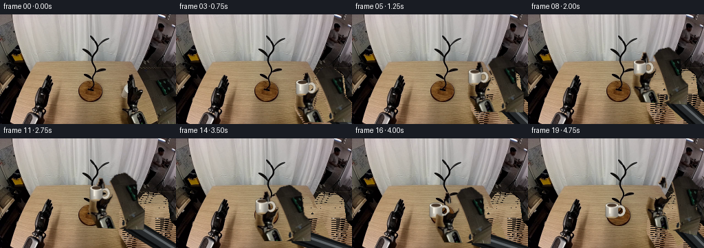
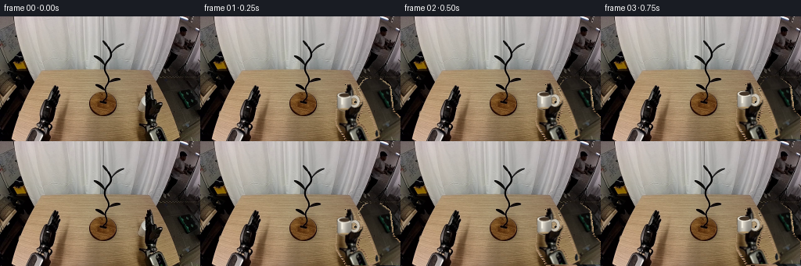
展开代码变化
--- 上一保存版本
+++ 本次保存版本
@@ -47,14 +47,14 @@
def cup_mask():
- """A rigid, anti-aliased cup plus handle mask in source coordinates."""
+ """A rigid cup silhouette used to exclude the cup from the hand sprite."""
yy, xx = np.mgrid[:HEIGHT, :WIDTH]
- body = ((xx - 184.3) / 10.2) ** 2 + ((yy - 109.5) / 11.1) ** 2 <= 1.0
+ body = ((xx - 184.3) / 9.4) ** 2 + ((yy - 109.5) / 10.6) ** 2 <= 1.0
# The handle is an open elliptical ring attached at the right of the body.
- handle_outer = ((xx - 198.0) / 8.8) ** 2 + ((yy - 109.2) / 8.4) ** 2 <= 1.0
- handle_inner = ((xx - 198.0) / 4.2) ** 2 + ((yy - 109.2) / 3.8) ** 2 <= 1.0
+ handle_outer = ((xx - 198.0) / 7.8) ** 2 + ((yy - 109.2) / 7.2) ** 2 <= 1.0
+ handle_inner = ((xx - 198.0) / 4.0) ** 2 + ((yy - 109.2) / 3.5) ** 2 <= 1.0
handle = handle_outer & ~handle_inner & (xx >= 191.0)
- mask = ((body | handle) & (xx >= 172) & (xx <= 208) & (yy >= 96) & (yy <= 122))
+ mask = ((body | handle) & (xx >= 174) & (xx <= 206) & (yy >= 98) & (yy <= 121))
mask = mask.astype(np.float32)
mask = cv2.GaussianBlur(mask, (3, 3), 0.55)
return np.clip(mask * 1.35, 0.0, 1.0)
@@ -108,27 +108,117 @@
hard_mask = cv2.dilate(hard_mask, np.ones((3, 3), np.uint8), iterations=1)
plate = cv2.inpaint(image, hard_mask, 7, cv2.INPAINT_TELEA)
- # Large inpainted regions on the table otherwise become unnaturally flat.
- # Rebuild those rows from a nearby clean strip and a deterministic grain.
+ # Rebuild masked table rows from clean wood on the left. A nearby strip
+ # retains the horizontal grain while avoiding the smeared telea result.
rng = np.random.default_rng(32032)
noise = rng.normal(0.0, 1.45, (HEIGHT, WIDTH, 1))
- for y in range(96, HEIGHT):
- clean = image[y, 158:169].astype(np.float32)
+ for y in range(79, HEIGHT):
+ if y < 96:
+ clean = image[y, 132:168].astype(np.float32)
+ elif y < 116:
+ clean = image[y, 76:111].astype(np.float32)
+ else:
+ clean = image[y, 58:106].astype(np.float32)
if clean.size == 0:
continue
row_color = np.median(clean, axis=0)
profile = clean - row_color
for x in np.flatnonzero(hard_mask[y] > 0):
- if x < 169:
- continue
- sample = profile[(x - 169) % len(profile)]
- wave = 1.15 * np.sin(0.23 * x + 0.11 * y)
+ sample = profile[(x + 7 * (y % 3)) % len(profile)]
+ wave = 0.9 * np.sin(0.23 * x + 0.11 * y)
plate[y, x] = np.clip(row_color + sample + wave + noise[y, x], 0, 255)
# Tiny vertical grain breaks up the repeated horizontal row fill.
fine = rng.normal(0.0, 0.85, (HEIGHT, WIDTH, 1))
plate = np.clip(plate.astype(np.float32) + fine * (hard_mask[:, :, None] > 0), 0, 255)
return plate.astype(np.uint8)
+
+
+def make_cup_sprite():
+ """Render an upright white ceramic mug with a visible handle."""
+ scale = 4
+ size = 64
+ canvas = np.zeros((size * scale, size * scale, 4), dtype=np.uint8)
+ yy, xx = np.mgrid[: size * scale, : size * scale]
+ cx, cy = 30.0 * scale, 34.0 * scale
+
+ def ellipse_mask(center, axes):
+ return ((xx - center[0]) / axes[0]) ** 2 + ((yy - center[1]) / axes[1]) ** 2 <= 1.0
+
+ body = (
+ ellipse_mask((cx, cy - 8.0 * scale), (9.3 * scale, 3.7 * scale))
+ | ellipse_mask((cx, cy + 8.0 * scale), (9.0 * scale, 3.5 * scale))
+ | ((np.abs(xx - cx) <= 9.3 * scale) & (yy >= cy - 8.0 * scale) & (yy <= cy + 8.0 * scale))
+ )
+ handle_outer = ellipse_mask((cx + 11.8 * scale, cy), (8.0 * scale, 8.6 * scale))
+ handle_inner = ellipse_mask((cx + 11.8 * scale, cy), (4.0 * scale, 4.4 * scale))
+ handle = handle_outer & ~handle_inner & (xx >= cx + 6.0 * scale)
+
+ # Ceramic shading: warm shadow on the left, bright frontal glaze, and a
+ # cooler gray edge on the right.
+ xnorm = np.clip((xx - (cx - 9.0 * scale)) / (18.0 * scale), 0.0, 1.0)
+ ynorm = np.clip((yy - (cy - 10.0 * scale)) / (20.0 * scale), 0.0, 1.0)
+ light = 0.72 + 0.30 * np.exp(-((xnorm - 0.40) / 0.24) ** 2)
+ light -= 0.12 * ynorm
+ body_color = np.stack(
+ [np.clip(224 * light, 0, 255), np.clip(218 * light, 0, 255), np.clip(205 * light, 0, 255)],
+ axis=-1,
+ )
+ handle_color = np.stack(
+ [np.full_like(light, 205), np.full_like(light, 198), np.full_like(light, 184)],
+ axis=-1,
+ )
+
+ canvas[handle, :3] = handle_color[handle]
+ canvas[handle, 3] = 255
+ canvas[body, :3] = body_color[body]
+ canvas[body, 3] = 255
+
+ # Top rim and dark opening.
+ rim_outer = ellipse_mask((cx, cy - 8.0 * scale), (9.3 * scale, 3.8 * scale))
+ rim_inner = ellipse_mask((cx, cy - 8.0 * scale), (7.0 * scale, 2.6 * scale))
+ canvas[rim_outer & ~rim_inner, :3] = (231, 225, 211)
+ canvas[rim_outer & ~rim_inner, 3] = 255
+ canvas[rim_inner, :3] = (68, 52, 38)
+ canvas[rim_inner, 3] = 255
+
+ # Narrow vertical highlight on the cup face.
+ highlight = (
+ (np.abs(xx - (cx - 3.0 * scale)) <= 1.2 * scale)
+ & (yy >= cy - 5.0 * scale)
+ & (yy <= cy + 4.0 * scale)
+ )
+ canvas[highlight & body, :3] = (243, 238, 224)
+ canvas[highlight & body, 3] = 255
+
+ # A small warm table reflection at the foot.
+ foot = ellipse_mask((cx, cy + 10.0 * scale), (7.5 * scale, 1.5 * scale))
+ canvas[foot & body, :3] = (173, 146, 105)
+ canvas[foot & body, 3] = 255
+
+ sprite = cv2.resize(canvas, (size, size), interpolation=cv2.INTER_AREA)
+ return sprite
+
+
+def draw_cup(image, sprite, center, angle_degrees):
+ """Place the upright cup sprite at a subpixel center."""
+ size = sprite.shape[0]
+ sprite_center = np.array([30.0, 34.0], dtype=np.float32)
+ target = np.asarray(center, dtype=np.float32)
+ theta = np.deg2rad(angle_degrees)
+ cosine, sine = np.cos(theta), np.sin(theta)
+ tx = target[0] - (cosine * sprite_center[0] - sine * sprite_center[1])
+ ty = target[1] - (sine * sprite_center[0] + cosine * sprite_center[1])
+ matrix = np.array([[cosine, -sine, tx], [sine, cosine, ty]], dtype=np.float32)
+ color = cv2.warpAffine(
+ sprite[:, :, :3], matrix, (WIDTH, HEIGHT), flags=cv2.INTER_LINEAR,
+ borderMode=cv2.BORDER_CONSTANT, borderValue=(0, 0, 0),
+ )
+ alpha = cv2.warpAffine(
+ sprite[:, :, 3], matrix, (WIDTH, HEIGHT), flags=cv2.INTER_LINEAR,
+ borderMode=cv2.BORDER_CONSTANT, borderValue=0,
+ ).astype(np.float32) / 255.0
+ return composite(image, color, alpha)
def affine_for_pose(reference, target, angle_degrees):
@@ -215,6 +305,7 @@
cup_alpha = cup_mask()
hand_alpha = gripper_mask(first, cup_alpha)
background = make_background(first, np.maximum(cup_alpha, hand_alpha))
+ cup_sprite = make_cup_sprite()
source_center = np.array([184.5, 109.5], dtype=np.float32)
wrist_source = np.array([232.0, 151.0], dtype=np.float32)
@@ -233,7 +324,6 @@
angle = 13.0 * alpha
hand_matrix = affine_for_pose(source_center, center, angle)
- cup_matrix = affine_for_pose(source_center, cup_center, 0.0)
# The cup is grounded initially and then casts a progressively softer
# moving shadow as it is lifted over the table.
@@ -245,17 +335,11 @@
wrist = transformed_point(hand_matrix, wrist_source)
canvas = draw_forearm(canvas, wrist)
+ # Cup first, then gripper fingers: the fingers visibly occlude the
+ # ceramic edge, making the grasp read as contact rather than overlap.
+ canvas = draw_cup(canvas, cup_sprite, cup_center, 0.0)
hand_image, hand_alpha_warped = warp_rgba(first, hand_alpha, hand_matrix)
canvas = composite(canvas, hand_image, hand_alpha_warped)
-
- cup_image, cup_alpha_warped = warp_rgba(first, cup_alpha, cup_matrix)
- canvas = composite(canvas, cup_image, cup_alpha_warped)
-
- # A small rim highlight makes the rigid cup read clearly after the
- # source pixels are translated over the darker stand and gripper.
- if frame > 2:
- cx, cy = int(round(cup_center[0])), int(round(cup_center[1]))
- cv2.ellipse(canvas, (cx, cy - 7), (7, 2), 0, 200, 340, (235, 232, 222), 1, cv2.LINE_AA)
frames.append(canvas)
可观测工具轨迹
实际执行的命令与返回图片。
命令 1exit 0
/bin/bash -c "pwd && rg --files -g 'prompt.txt' -g 'GENERATION_RULES.md' -g '*.py' -g '*.md' | head -200"
命令 2exit 0
/bin/bash -c 'cat prompt.txt'
命令 3exit 0
/bin/bash -c 'cat GENERATION_RULES.md'
命令 4exit 127
/bin/bash -c 'ls -la && file first_frame.png && ffprobe -v error -show_entries stream=width,height,codec_name -of default=noprint_wrappers=1 first_frame.png'
命令 5exit 0
/bin/bash -c 'cat task_spec.json'
命令 6exit 0
/bin/bash -c "sed -n '1,260p' artifact_io.py"
命令 7exit 0
/bin/bash -c "python - <<'PY'
from PIL import Image
im=Image.open('first_frame.png')
print(im.size, im.mode)
PY"命令 8exit 0
/bin/bash -c "python - <<'PY'
from PIL import Image
im=Image.open('first_frame.png')
im.crop((80,15,215,150)).resize((540,540), Image.Resampling.NEAREST).save('.tmp/center_zoom.png')
im.crop((155,70,256,160)).resize((404,360), Image.Resampling.NEAREST).save('.tmp/right_zoom.png')
PY"命令 9exit 0
/bin/bash -c "python - <<'PY' mods=['cv2','scipy','skimage','numpy','PIL'] for m in mods: try: x=__import__(m); print(m, getattr(x,'__version__','ok')) except Exception as e: print(m,'NO',e) PY"
命令 10exit 0
/bin/bash -c "python - <<'PY'
from PIL import Image
im=Image.open('first_frame.png')
im.crop((170,85,256,160)).resize((688,600), Image.Resampling.NEAREST).save('.tmp/gripper_zoom.png')
PY"命令 11exit 0
/bin/bash -c "python - <<'PY'
import cv2, numpy as np
im=cv2.imread('first_frame.png')
hsv=cv2.cvtColor(im,cv2.COLOR_BGR2HSV)
pts=[(185,115),(190,110),(180,120),(205,110),(220,120),(230,130),(240,150),(220,155),(200,150),(210,90),(240,90),(190,95),(200,100),(170,120),(160,120),(250,120)]
for x,y in pts:
b,g,r=im[y,x]; h,s,v=hsv[y,x]; print((x,y),'rgb',(int(r),int(g),int(b)),'hsv',(int(h),int(s),int(v)))
PY"命令 12exit 0
/bin/bash -c "python - <<'PY'
from PIL import Image,ImageDraw
im=Image.open('first_frame.png').crop((160,70,256,160)).resize((768,720),Image.Resampling.NEAREST)
d=ImageDraw.Draw(im)
for x in range(0,97,5):
xx=x*8; d.line((xx,0,xx,720),fill=(255,0,0),width=1); d.text((xx+2,2),str(x+160),fill=(255,0,0))
for y in range(0,91,5):
yy=y*8; d.line((0,yy,768,yy),fill=(0,255,0),width=1); d.text((2,yy+2),str(y+70),fill=(0,255,0))
im.save('.tmp/right_grid.png')
PY"命令 13exit 0
/bin/bash -c "python - <<'PY'
from PIL import Image
im=Image.open('first_frame.png')
im.crop((100,15,225,150)).resize((625,675), Image.Resampling.LANCZOS).save('.tmp/tree_zoom.png')
PY"命令 14exit 0
/bin/bash -c "python - <<'PY'
import cv2, numpy as np
from PIL import Image, ImageDraw
im=cv2.imread('first_frame.png')
h,w=im.shape[:2]
gray=cv2.cvtColor(im,cv2.COLOR_BGR2GRAY)
mask=np.zeros((h,w),np.uint8)
# dark pixels in right-hand ROI, connected from bottom/right or hand cores
roi=(np.indices((h,w))[1]>=170)&(np.indices((h,w))[1]<256)&(np.indices((h,w))[0]>=80)
dark=((gray<115)&roi).astype(np.uint8)*255
num,lab,stats,cents=cv2.connectedComponentsWithStats(dark,8)
for i in range(1,num):
x,y,ww,hh,area=stats[i]
if area>=5 and (x+ww>=250 or y+hh>=157 or area>150): mask[lab==i]=255
# remove mug interior/right-side bright zones by hand exclusion? add left finger parts
poly=np.array([[172,85],[181,86],[182,96],[178,101],[173,98]],np.int32)
cv2.fillPoly(mask,[poly],255)
mask=cv2.morphologyEx(mask,cv2.MORPH_CLOSE,np.ones((3,3),np.uint8),iterations=1)
mask=cv2.dilate(mask,np.ones((3,3),np.uint8),iterations=1)
# analytic mug mask
yy,xx=np.mgrid[:h,:w]
cup=((xx-184.5)**2/(9.6**2)+(yy-103.2)**2/(4.8**2)<=1)&(yy<=120)
cup|=((xx>=175)&(xx<=194)&(yy>=103)&(yy<=118))
cup|=((xx-184.5)**2/(9.6**2)+(yy-118)**2/(3.2**2)<=1)
cup &= ~((xx>192)&(yy>110))
cupmask=(cup.astype(np.uint8)*255)
# don't let gripper overlap mug core
mask[cupmask>0]=0
both=np.maximum(mask,cupmask)
bg=cv2.inpaint(im,both,7,cv2.INPAINT_TELEA)
# overlay
ov=im.copy(); ov[mask>0]=(0,0,255); ov[cupmask>0]=(255,0,0)
cv2.imwrite('.tmp/masks.png',ov)
cv2.imwrite('.tmp/background.png',bg)
print('mask pixels',np.count_nonzero(mask),'cup',np.count_nonzero(cupmask))
PY"命令 15exit 0
/bin/bash -c "python - <<'PY'
import cv2,numpy as np
im=cv2.imread('first_frame.png'); h,w=im.shape[:2]
pts=np.array([[174,87],[183,84],[188,93],[184,104],[172,104],[163,94]],np.float32)
for k in range(6):
mask=np.zeros((h,w),np.uint8); cv2.fillPoly(mask,[pts.astype(np.int32)],255)
out=cv2.inpaint(im,mask,5,cv2.INPAINT_TELEA)
cv2.imwrite(f'.tmp/inp{k}.png',out[75:120,155:200])
pts[:,0]+=(186-pts[:,0].mean())
# shift 2
pts[:,0]+=2
PY"命令 16exit 0
/bin/bash -c 'python generate.py'
命令 17exit 0
/bin/bash -c "python - <<'PY'
from PIL import Image,ImageDraw
from pathlib import Path
files=sorted(Path('frames').glob('*.png'))
w,h=256,160
sheet=Image.new('RGB',(w*5,(h+18)*4),(20,22,26)); d=ImageDraw.Draw(sheet)
for i,p in enumerate(files):
x=(i%5)*w;y=(i//5)*(h+18);d.text((x+3,y+2),f'{i:02d}',fill='white');sheet.paste(Image.open(p),(x,y+18))
sheet.save('.tmp/all_frames.png')
PY"命令 18exit 0
/bin/bash -c "python - <<'PY'
from PIL import Image
for f in [0,3,6,9,12,15,19]:
im=Image.open(f'frames/{f:02d}.png')
im.crop((105,60,215,145)).resize((660,510),Image.Resampling.NEAREST).save(f'.tmp/crop{f:02d}.png')
PY"命令 19exit 1
/bin/bash -c "python - <<'PY'
import cv2, numpy as np
im=cv2.imread('first_frame.png')
hsv=cv2.cvtColor(im,cv2.COLOR_BGR2HSV)
g=cv2.cvtColor(im,cv2.COLOR_BGR2GRAY)
# print coarse mask ascii for ROI 168:256,80:160
for y in range(80,160,2):
s=''
for x in range(168,256,2):
b,gg,r=im[y:y+2,x:x+2].mean((0,1)); v=max(b,gg,r); sat=max(b,gg,r)-min(b,gg,r)
if r>140 and g>130 and b>120: c='C'
elif v<55: c='#'
elif v<105: c='o'
elif sat<20 and v<155:c='+'
elif v<150:c='.'
else:c=' '
s+=c
print(f'{y:3}',s)
PY"命令 20exit 0
/bin/bash -c "python - <<'PY'
import cv2, numpy as np
im=cv2.imread('first_frame.png')
for y in range(80,160,2):
s=''
for x in range(168,256,2):
b,g,r=im[y:y+2,x:x+2].mean((0,1)); v=max(b,g,r); sat=max(b,g,r)-min(b,g,r)
if r>140 and g>130 and b>120: c='C'
elif v<55: c='#'
elif v<105: c='o'
elif sat<20 and v<155:c='+'
elif v<150:c='.'
else:c=' '
s+=c
print(f'{y:3}',s)
PY"命令 21exit 0
/bin/bash -c "python - <<'PY'
from PIL import Image
im=Image.open('first_frame.png').crop((165,75,256,160)).resize((728,680),Image.Resampling.NEAREST)
im.save('.tmp/right_big.png')
PY"命令 22exit 0
/bin/bash -c "python - <<'PY'
from PIL import Image
im=Image.open('first_frame.png')
im.crop((0,90,170,160)).resize((680,280),Image.Resampling.NEAREST).save('.tmp/table_clean.png')
PY"命令 23exit 0
/bin/bash -c "python - <<'PY'
import cv2,numpy as np
im=cv2.imread('first_frame.png')
# dump grid of HSV over cup
hsv=cv2.cvtColor(im,cv2.COLOR_BGR2HSV)
for y in range(92,125,2):
print(y,end=' ')
for x in range(170,207,2):
h,s,v=hsv[y,x];
if 165<=x<=202 and 97<=y<=120:
print(f'{s:03d}',end=' ')
else: print('...',end=' ')
print()
PY"命令 24exit 0
/bin/bash -c "python - <<'PY'
import cv2,numpy as np
im=cv2.imread('first_frame.png')
# cup ROI enlarged with grid every pixel? 5px
from PIL import Image,ImageDraw
c=Image.open('first_frame.png').crop((168,94,211,124)).resize((860,600),Image.Resampling.NEAREST)
d=ImageDraw.Draw(c)
for x in range(0,44,2):
d.line((x*20,0,x*20,600),fill='red');d.text((x*20+2,2),str(x+168),fill='red')
for y in range(0,31,2):
d.line((0,y*20,860,y*20),fill='green');d.text((2,y*20+2),str(y+94),fill='green')
c.save('.tmp/cup_grid.png')
PY"命令 25exit 0
/bin/bash -c "python - <<'PY'
import cv2,numpy as np
im=cv2.imread('first_frame.png'); hsv=cv2.cvtColor(im,cv2.COLOR_BGR2HSV)
# cup alpha via neutral low-saturation mask, manual region, close holes
yy,xx=np.mgrid[:160,:256]
roi=(xx>=172)&(xx<=206)&(yy>=96)&(yy<=121)
s=hsv[:,:,1]; v=hsv[:,:,2]
core=(s<135)&roi
# remove pure black and retain low sat; black hand is also low sat but its saturation mostly >135 per samples? fill components attached to cup bounds
m=(core.astype(np.uint8)*255)
# remove components not intersect cup bbox central
num,lab,stats,_=cv2.connectedComponentsWithStats(m,8)
out=np.zeros_like(m)
for i in range(1,num):
x,y,w,h,a=stats[i]
if x>=172 and x+w<=207 and y>=96 and y+h<=122 and a>5: out[lab==i]=255
# output overlay
ov=im.copy();ov[out>0]=(0,0,255)
cv2.imwrite('.tmp/cup_seg2.png',ov)
print(np.count_nonzero(out))
PY"命令 26exit 0
/bin/bash -c "python - <<'PY'
import cv2,numpy as np
im=cv2.imread('first_frame.png'); hsv=cv2.cvtColor(im,cv2.COLOR_BGR2HSV)
s=hsv[:,:,1];v=hsv[:,:,2]
yy,xx=np.mgrid[:160,:256]
roi=(xx>=172)&(xx<=204)&(yy>=96)&(yy<=120)
m=((s<150)&(v>20)&roi).astype(np.uint8)*255
# close tiny gaps but not across handle hole? just close
m=cv2.morphologyEx(m,cv2.MORPH_CLOSE,np.ones((3,3),np.uint8))
num,lab,stats,_=cv2.connectedComponentsWithStats(m,8)
out=np.zeros_like(m)
for i in range(1,num):
x,y,w,h,a=stats[i]
if a>8 and x<203 and y<120:out[lab==i]=255
# get convex hull to fill handle? no, preserve hole with contour approx + manual cup shape
ov=im.copy();ov[out>0]=(0,0,255);cv2.imwrite('.tmp/cup_seg3.png',ov)
PY"命令 27exit 0
/bin/bash -c "python - <<'PY'
import cv2,numpy as np
im=cv2.imread('first_frame.png'); hsv=cv2.cvtColor(im,cv2.COLOR_BGR2HSV)
s=hsv[:,:,1];v=hsv[:,:,2]
yy,xx=np.mgrid[:160,:256]
roi=(xx>=172)&(xx<=205)&(yy>=96)&(yy<=121)
m=((s<154)&(v>18)&roi).astype(np.uint8)*255
num,lab,stats,_=cv2.connectedComponentsWithStats(m,8)
out=np.zeros_like(m)
for i in range(1,num):
x,y,w,h,a=stats[i]
if x>=172 and x+w<=205 and y>=96 and y+h<=121 and a>=2:out[lab==i]=255
# make cup body convex hull plus handle ring roughly
contours,_=cv2.findContours(out,cv2.RETR_EXTERNAL,cv2.CHAIN_APPROX_SIMPLE)
for c in contours:
hull=cv2.convexHull(c);cv2.drawContours(out,[hull],-1,255,-1)
ov=im.copy();ov[out>0]=(0,0,255);cv2.imwrite('.tmp/cup_seg4.png',ov)
PY"命令 28exit 0
/bin/bash -c "python - <<'PY'
import cv2,numpy as np
from generate import gripper_mask,cup_mask
from PIL import Image
im=np.asarray(Image.open('first_frame.png').convert('RGB'))
a=gripper_mask(im,cup_mask())
# components of alpha
m=(a>0.15).astype(np.uint8)
n,l,st,c=cv2.connectedComponentsWithStats(m,8)
for i in range(1,n): print(i,st[i].tolist(),c[i].tolist())
PY"命令 29exit 0
/bin/bash -c "python - <<'PY'
import cv2,numpy as np
from PIL import Image
im=cv2.imread('first_frame.png')
# create mask for cup by manually tracing silhouette polygon including handle outer; hole not crucial as source shows hand through handle
poly=np.array([[174,99],[184,98],[190,99],[193,103],[202,101],[206,106],[204,114],[198,118],[194,119],[192,116],[188,118],[183,120],[177,119],[173,114]],np.int32)
mask=np.zeros(im.shape[:2],np.uint8);cv2.fillPoly(mask,[poly],255)
# exclude holes for handle (x196-201,y106-114) keep source pixels? for sprite, transparency helps. use ring geometry
ov=im.copy();ov[mask>0]=(0,0,255);cv2.imwrite('.tmp/cup_poly.png',ov)
print(np.count_nonzero(mask))
PY"命令 30exit 0
/bin/bash -c "python - <<'PY'
import cv2,numpy as np
from PIL import Image
im=cv2.imread('first_frame.png')
hsv=cv2.cvtColor(im,cv2.COLOR_BGR2HSV); s=hsv[:,:,1];v=hsv[:,:,2]
yy,xx=np.mgrid[:160,:256]
roi=(xx>=171)&(xx<=206)&(yy>=96)&(yy<=121)
m=((s<150)&(v>25)&roi).astype(np.uint8)*255
n,l,st,c=cv2.connectedComponentsWithStats(m,8)
out=np.zeros_like(m)
for i in range(1,n):
x,y,w,h,a=st[i]
print(i,(x,y,w,h,a))
if a>=3:out[l==i]=255
# remove small speckles and morphological close
# connect only using dilation 1 then restore?
out=cv2.morphologyEx(out,cv2.MORPH_CLOSE,np.ones((3,3),np.uint8))
ov=im.copy();ov[out>0]=(0,0,255);cv2.imwrite('.tmp/cup_seg5.png',ov)
PY"命令 31exit 0
/bin/bash -c "python - <<'PY'
import cv2,numpy as np
im=cv2.imread('first_frame.png')
# show raw cup crop with labels ascii based on whiteness/neutral
hsv=cv2.cvtColor(im,cv2.COLOR_BGR2HSV)
for y in range(96,122):
s=''
for x in range(170,208):
h,ss,v=hsv[y,x]
if ss<155 and v>120: c='C'
elif ss<155 and v>45:c='c'
elif v<60:c='#'
elif v<110:c='o'
elif v<145:c='.'
else:' '
s+=c
print(f'{y:3}',s)
PY"命令 32exit 0
/bin/bash -c "python - <<'PY'
import cv2,numpy as np
im=cv2.imread('first_frame.png')
# inspect rgb crop ascii intensity
for y in range(94,123):
s=''
for x in range(170,209):
b,g,r=im[y,x];v=(int(r)+int(g)+int(b))//3
if v>165:c='@'
elif v>140:c='O'
elif v>115:c='o'
elif v>90:c='+'
elif v>65:c='-'
elif v>40:c='.'
else:' '
s+=c
print(f'{y:3}',s)
PY"命令 33exit 0
/bin/bash -c "python - <<'PY'
import cv2,numpy as np
from PIL import Image
from generate import cup_mask,gripper_mask
im=np.asarray(Image.open('first_frame.png').convert('RGB'))
ca=cup_mask(); ha=gripper_mask(im,ca);m=(np.maximum(ca,ha)>.08).astype(np.uint8)*255;m=cv2.dilate(m,np.ones((3,3),np.uint8),iterations=1)
out=cv2.inpaint(cv2.cvtColor(im,cv2.COLOR_RGB2BGR),m,9,cv2.INPAINT_TELEA)
cv2.imwrite('.tmp/inpaint9.png',out)
PY"命令 34exit 0
/bin/bash -c "python - <<'PY'
import cv2,numpy as np
from generate import cup_mask,gripper_mask
from PIL import Image
im=np.asarray(Image.open('first_frame.png').convert('RGB'))
ca=cup_mask(); ha=gripper_mask(im,ca)
for a in [.05,.2,.4,.6]:
m=((ca>a)|(ha>a)).astype(np.uint8)*255
out=cv2.inpaint(cv2.cvtColor(im,cv2.COLOR_RGB2BGR),m,5,cv2.INPAINT_TELEA)
cv2.imwrite(f'.tmp/ip{a}.png',out)
PY"命令 35exit 0
/bin/bash -c "python - <<'PY'
import cv2,numpy as np
from PIL import Image
im=cv2.imread('first_frame.png')
hsv=cv2.cvtColor(im,cv2.COLOR_BGR2HSV)
s=hsv[:,:,1];v=hsv[:,:,2]
yy,xx=np.mgrid[:160,:256]
# region cup: broad white ceramic + handle. Let threshold 180 sat
roi=(xx>=171)&(xx<=207)&(yy>=97)&(yy<=122)
m=((s<180)&(v>35)&roi).astype(np.uint8)*255
n,l,st,c=cv2.connectedComponentsWithStats(m,8)
out=np.zeros_like(m)
for i in range(1,n):
x,y,w,h,a=st[i]
if a>=2 and x<207 and y<122:out[l==i]=255
# fill cup body only bounded, preserve handle hole by polygon exclusion below later
out=cv2.morphologyEx(out,cv2.MORPH_CLOSE,np.ones((2,2),np.uint8))
ov=im.copy();ov[out>0]=(0,0,255);cv2.imwrite('.tmp/cup_seg6.png',ov)
PY"命令 36exit 0
/bin/bash -c "python - <<'PY'
from PIL import Image
im=Image.open('first_frame.png')
im.crop((168,90,210,125)).resize((840,700),Image.Resampling.LANCZOS).save('.tmp/cup_smooth.png')
PY"命令 37exit 0
/bin/bash -c "python - <<'PY'
import cv2,numpy as np
im=cv2.imread('first_frame.png')
hsv=cv2.cvtColor(im,cv2.COLOR_BGR2HSV)
s=hsv[:,:,1];v=hsv[:,:,2]
yy,xx=np.mgrid[:160,:256]
# strict ceramic: white pixels sat low, val high
ceramic=(s<180)&(v>65)
roi=(xx>=170)&(xx<=208)&(yy>=96)&(yy<=122)
m=(ceramic&roi).astype(np.uint8)*255
# close then find largest components, dilate into dark rim but constrain with cup silhouette polygon
n,l,st,c=cv2.connectedComponentsWithStats(m,8)
print('components')
for i in range(1,n): print(i,st[i].tolist())
PY"命令 38exit 0
/bin/bash -c "python - <<'PY'
import cv2,numpy as np
im=cv2.imread('first_frame.png');hsv=cv2.cvtColor(im,cv2.COLOR_BGR2HSV);s=hsv[:,:,1];v=hsv[:,:,2]
yy,xx=np.mgrid[:160,:256]
roi=(xx>=170)&(xx<=208)&(yy>=96)&(yy<=122)
m=(((s<180)&(v>65)&roi).astype(np.uint8)*255)
n,l,st,c=cv2.connectedComponentsWithStats(m,8)
out=np.zeros_like(m)
for i in range(1,n):
if st[i,4]>10:out[l==i]=255
# include dark rim via distance to white regions: dilate up to 2 pixels but only within broad polygon
poly=np.array([[172,98],[185,97],[192,98],[195,102],[203,101],[207,107],[205,116],[198,120],[193,119],[188,121],[177,120],[172,113]],np.int32)
allowed=np.zeros_like(m);cv2.fillPoly(allowed,[poly],255)
out=cv2.dilate(out,np.ones((3,3),np.uint8),iterations=1)
out=np.minimum(out,allowed)
# fill cup body: use polygon excluding handle hole
body=np.array([[173,99],[186,98],[191,99],[194,105],[194,115],[190,120],[177,120],[172,114]],np.int32)
bm=np.zeros_like(m);cv2.fillPoly(bm,[body],255)
out=np.maximum(out,bm)
ov=im.copy();ov[out>0]=(0,0,255);cv2.imwrite('.tmp/cup_seg7.png',ov)
PY"命令 39exit 0
/bin/bash -c "python - <<'PY'
import cv2,numpy as np
im=cv2.imread('first_frame.png');hsv=cv2.cvtColor(im,cv2.COLOR_BGR2HSV);s=hsv[:,:,1];v=hsv[:,:,2]
yy,xx=np.mgrid[:160,:256]
roi=(xx>=170)&(xx<=208)&(yy>=96)&(yy<=122)
m=(((s<180)&(v>65)&roi).astype(np.uint8)*255)
n,l,st,c=cv2.connectedComponentsWithStats(m,8)
out=np.zeros_like(m)
for i in range(1,n):
if st[i,4]>10:out[l==i]=255
# do not fill body blindly: retain actual pixels within convex contour but handle hole should remain hand, so exclude only if dark neutral? keep source alpha including hand region perhaps background plate fixes later
# output source masked only, no body fill
ov=im.copy();ov[out>0]=(0,0,255);cv2.imwrite('.tmp/cup_seg8.png',ov)
PY"命令 40exit 0
/bin/bash -c 'python generate.py'
命令 41exit 0
/bin/bash -c "python - <<'PY'
from PIL import Image
for f in [1,3,6,9,12,15,19]:
Image.open(f'frames/{f:02d}.png').crop((105,65,215,145)).resize((660,480),Image.Resampling.NEAREST).save(f'.tmp/v2crop{f:02d}.png')
PY"命令 42exit 0
/bin/bash -c "python - <<'PY'
import cv2,numpy as np
from generate import make_cup_sprite
s=make_cup_sprite()
cv2.imwrite('.tmp/cup_sprite.png',cv2.cvtColor(s[:,:,:3],cv2.COLOR_RGB2BGR))
cv2.imwrite('.tmp/cup_sprite_alpha.png',s[:,:,3])
PY"命令 43exit 0
/bin/bash -c "python - <<'PY'
from PIL import Image
Image.open('first_frame.png').crop((168,92,210,124)).resize((840,640),Image.Resampling.NEAREST).save('.tmp/orig_cup_pixel.png')
PY"命令 44exit 0
/bin/bash -c "ls -lh generate.py task.mp4 pixels.npz inspection.png transition_check.png candidate_sheet.png frames/*.png | tail -30 && python - <<'PY'
from pathlib import Path
import numpy as np
from PIL import Image
im=np.array(Image.open('frames/00.png'))
orig=np.array(Image.open('first_frame.png'))
print('frame0 identical',np.array_equal(im,orig),im.shape)
print('frames',len(list(Path('frames').glob('*.png'))))
PY"命令 45exit 0
/bin/bash -c 'ffprobe -v error -show_entries stream=codec_name,width,height,r_frame_rate,nb_frames,duration -of default=noprint_wrappers=1 task.mp4 2>/dev/null || true'
命令 46exit 0
/bin/bash -c "python - <<'PY'
import cv2, numpy as np
cap=cv2.VideoCapture('task.mp4')
print('mp4 opened',cap.isOpened())
count=0
ok=True
while True:
ret,frame=cap.read()
if not ret: break
count+=1
if frame.shape"'!=(160,256,3): ok=False
print('"'mp4 frames',count,'shape_ok',ok)
cap.release()
PY"命令 47exit 0
/bin/bash -c "python generate.py && python - <<'PY'
import json, numpy as np
from PIL import Image
spec=json.load(open('task_spec.json'))
f=np.stack([np.array(Image.open(f'frames/{i:02d}.png')) for i in range(spec['frames'])])
p=np.load('pixels.npz')['pixels']
packed=(f[:,:,:,0].astype(np.uint32)<<16)|(f[:,:,:,1].astype(np.uint32)<<8)|f[:,:,:,2].astype(np.uint32)
print('frames',f.shape,'dtype',f.dtype,'fps',spec['fps'])
print('first identical',np.array_equal(f[0],np.array(Image.open('first_frame.png'))))
print('pixel payload identical',np.array_equal(p,packed.transpose(1,2,0)))
print('per-frame changed pixels',[int(np.any(f[i]"'!=f[i-1],axis=2).sum()) for i in range(1,len(f))])
PY'视觉工具实际返回图片 1

视觉工具实际返回图片 2
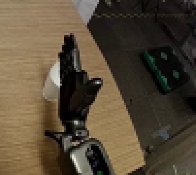
视觉工具实际返回图片 3
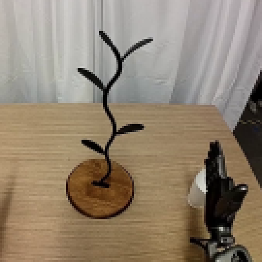
视觉工具实际返回图片 4
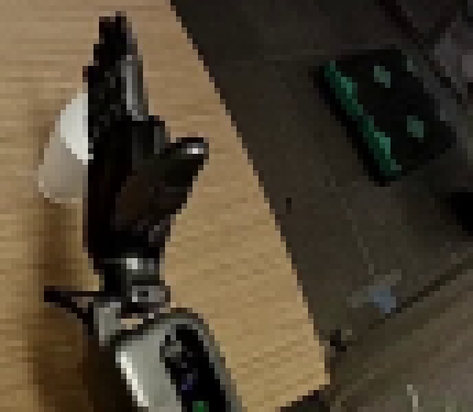
视觉工具实际返回图片 5
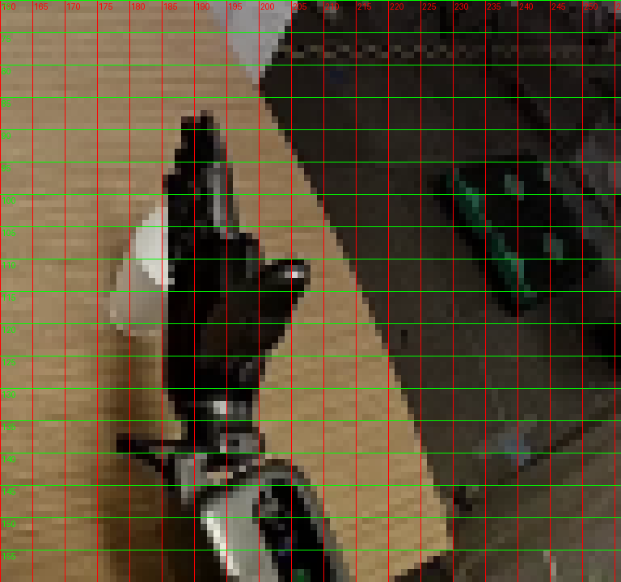
视觉工具实际返回图片 6
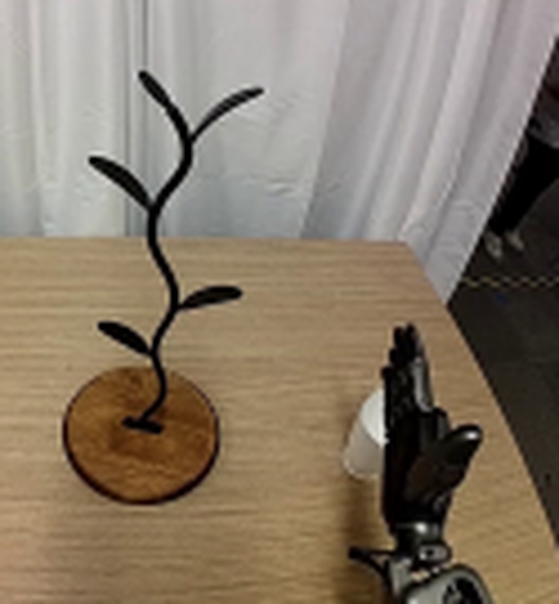
视觉工具实际返回图片 7
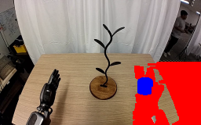
视觉工具实际返回图片 8
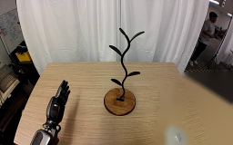
视觉工具实际返回图片 9
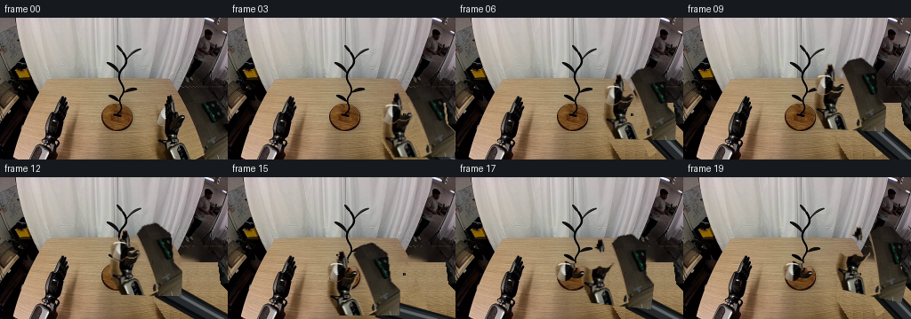
视觉工具实际返回图片 10
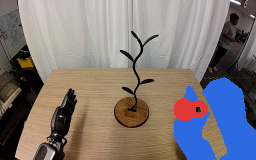
视觉工具实际返回图片 11
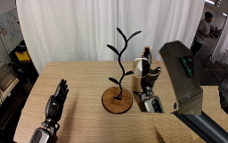
视觉工具实际返回图片 12
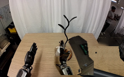
视觉工具实际返回图片 13
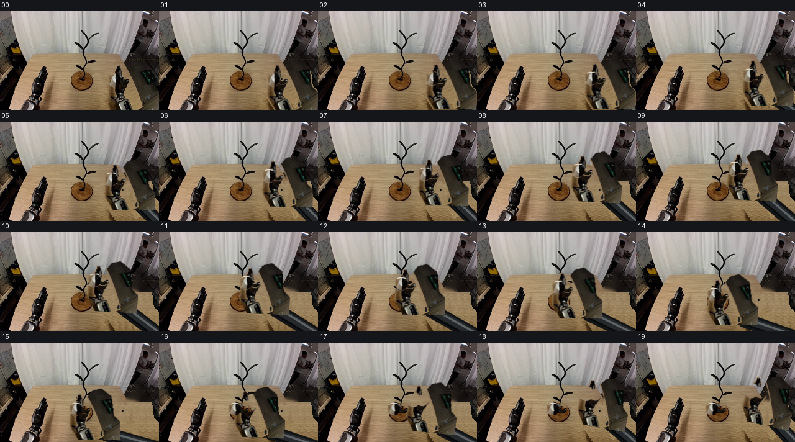
视觉工具实际返回图片 14
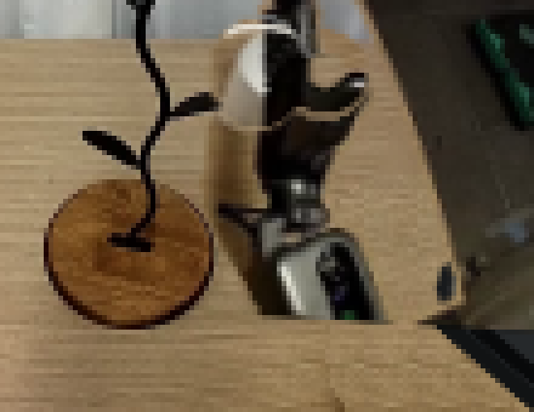
视觉工具实际返回图片 15
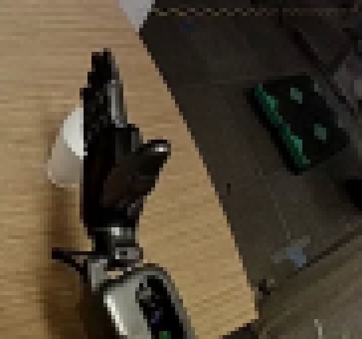
视觉工具实际返回图片 16
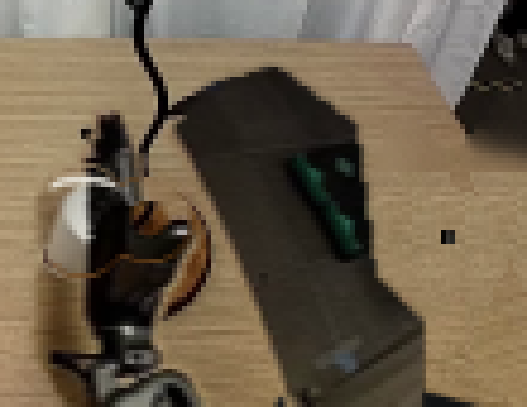
视觉工具实际返回图片 17
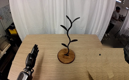
视觉工具实际返回图片 18
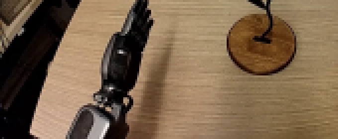
视觉工具实际返回图片 19
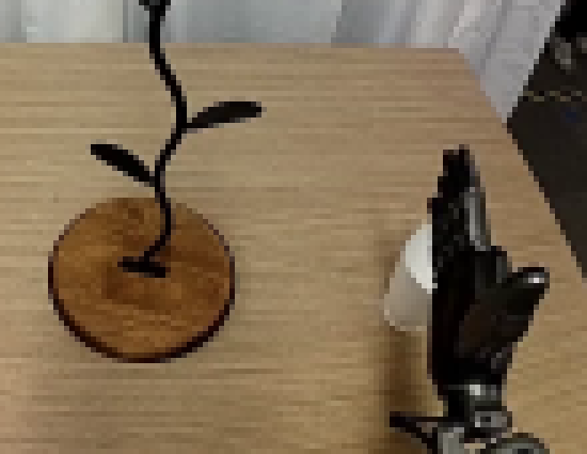
视觉工具实际返回图片 20
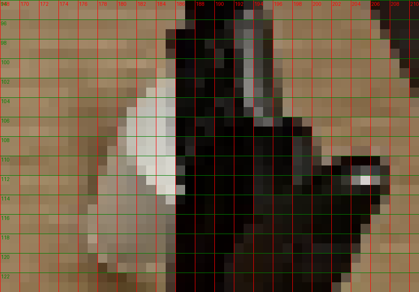
视觉工具实际返回图片 21
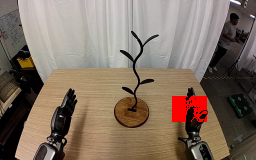
视觉工具实际返回图片 22
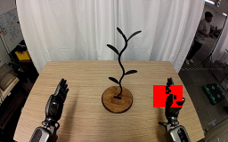
视觉工具实际返回图片 23
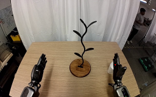
视觉工具实际返回图片 24
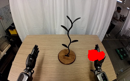
视觉工具实际返回图片 25
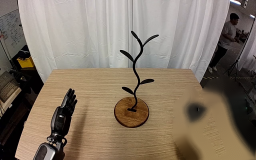
视觉工具实际返回图片 26
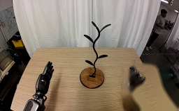
视觉工具实际返回图片 27
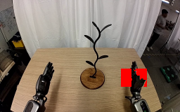
视觉工具实际返回图片 28
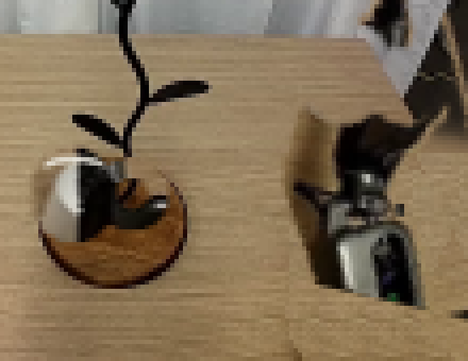
视觉工具实际返回图片 29
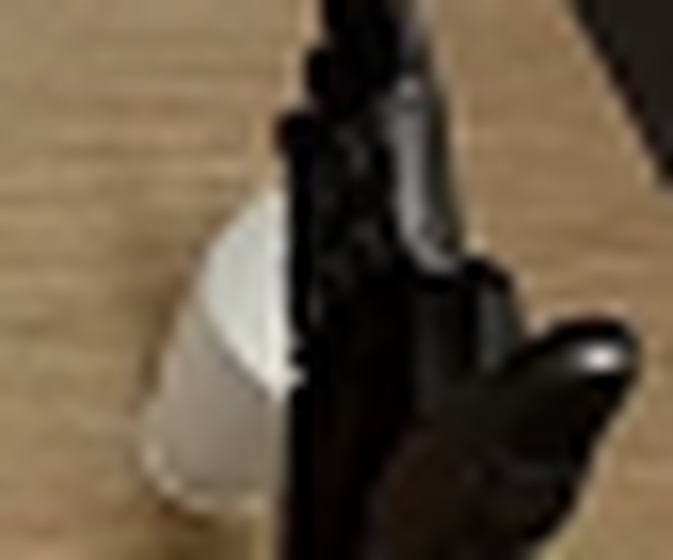
视觉工具实际返回图片 30
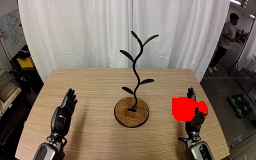
视觉工具实际返回图片 31
视觉工具实际返回图片 32
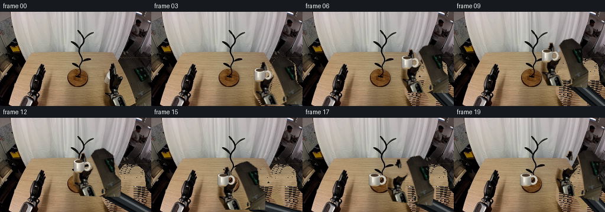
视觉工具实际返回图片 33
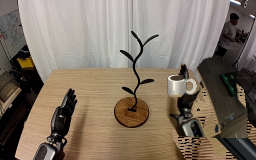
视觉工具实际返回图片 34
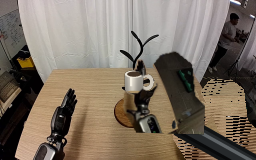
视觉工具实际返回图片 35
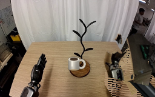
视觉工具实际返回图片 36
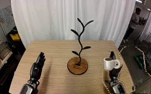
视觉工具实际返回图片 37
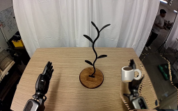
视觉工具实际返回图片 38
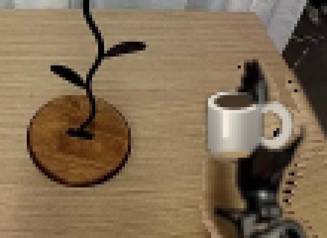
视觉工具实际返回图片 39
视觉工具实际返回图片 40

视觉工具实际返回图片 41
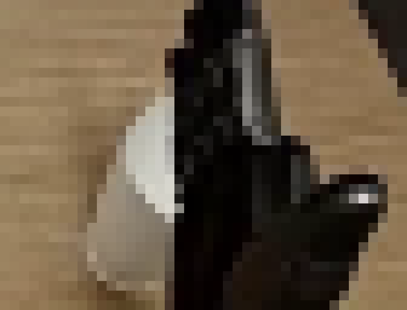
视觉工具实际返回图片 42
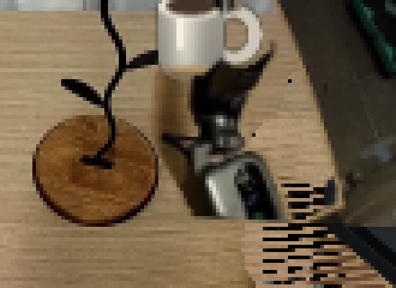
视觉工具实际返回图片 43
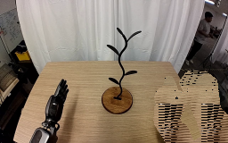
视觉工具实际返回图片 44
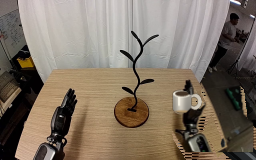
视觉工具实际返回图片 45
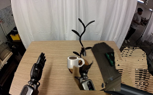
视觉工具实际返回图片 46

视觉工具实际返回图片 47
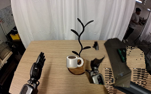
保存候选 2 份；完成命令 47 次；可验证图片返回 47 张。原始 API 响应与完整日志保留在本地。